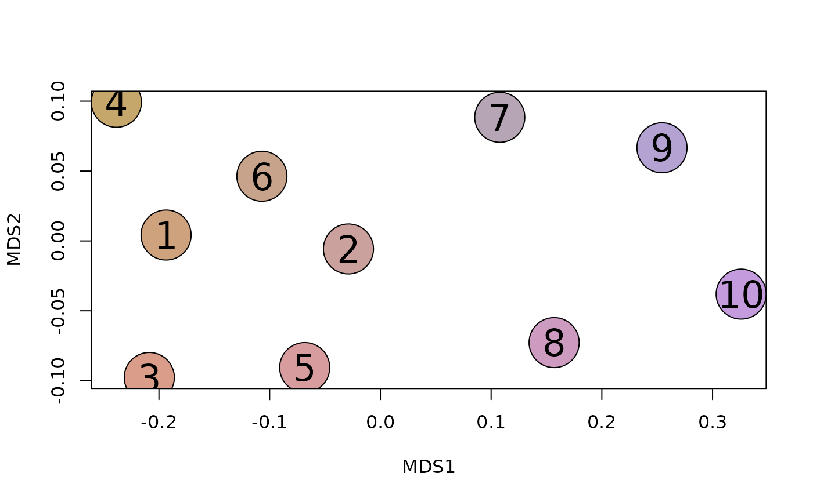
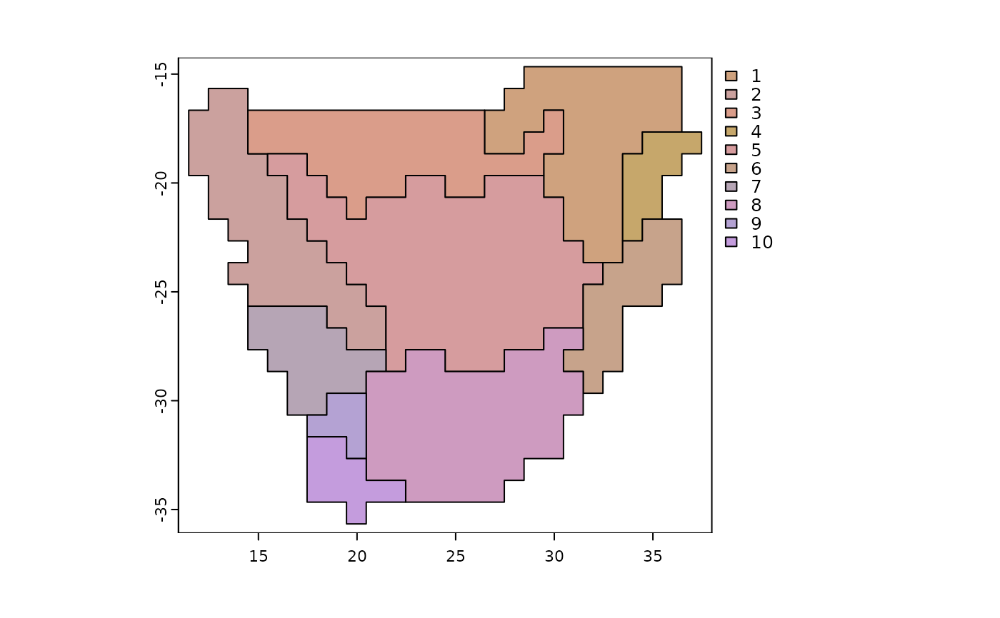

Visualize biogeographic patterns
# S3 method for phyloregion
plot(x, pol = NULL, palette = "NMDS", col = NULL, label = FALSE, ...)
plot_NMDS(x, ...)
text_NMDS(x, ...)an object of class phyloregion from phyloregion
a polygon shapefile of grid cells.
name of the palette to generate colors from. The default,
“NMDS”, allows display of phyloregions in multidimensional
scaling color space matching the color vision of the human visual
system. The name is matched to the list of available color palettes from
the hcl.colors function in the grDevices package.
vector of colors of length equal to the number of phyloregions.
Logical, whether to print cluster names or not
arguments passed among methods.
No return value, called for plotting.
library(terra)
data(africa)
tree <- africa$phylo
x <- africa$comm
p <- vect(system.file("ex/sa.json", package = "phyloregion"))
subphy <- match_phylo_comm(tree, x)$phy
submat <- match_phylo_comm(tree, x)$com
pbc <- phylobeta(submat, subphy)
y <- phyloregion(pbc[[1]], pol=p)
#> Warning: convex combination of colors in polar coordinates (polarLUV) may not be appropriate
#> Warning: convex combination of colors in polar coordinates (polarLUV) may not be appropriate
plot_NMDS(y, cex=6)
#> Warning: convex combination of colors in polar coordinates (polarLUV) may not be appropriate
#> Warning: convex combination of colors in polar coordinates (polarLUV) may not be appropriate
text_NMDS(y, cex=2)

plot(y, cex=1, palette="NMDS")
plot(y, cex=1)
